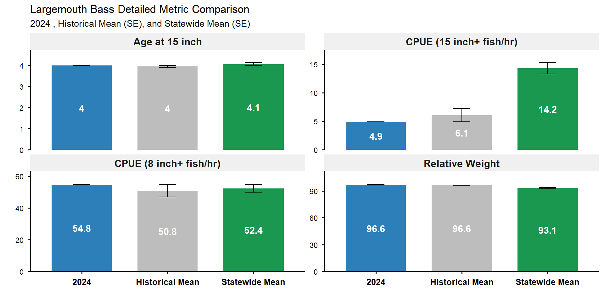
Introduction
The information below highlights some of the surveys and key metrics used by Alabama Department of Conservation and Natural Resources (ADCNR) Freshwater Fisheries biologists to monitor fish populations and guide management decisions. These measurements help biologists evaluate fish abundance, growth, size structure, and overall health. Brief explanations of several commonly used metrics are provided below. For additional information, please contact your local district biologist.
Catch-per-unit-effort (CPUE) measures the number of fish caught for a given amount of sampling effort, such as fish collected per hour of electrofishing. CPUE helps biologists track changes in relative abundance over time and determine whether fish populations are increasing, decreasing, or remaining stable.
Proportional Stock Density (PSD) is a measure of fish size structure. It indicates the proportion of fish in a population that are at or above the quality size range, which is 8 inches for crappie, 11 inches for spotted and Alabama bass, and 12 inches for largemouth bass.
Relative Stock Density (RSD-P) is a measure of fish size structure. It indicates the proportion of fish in a population that are at or above the preferred size range, which is 10 inches for crappie, 14 inches for spotted bass, and 15 inches for largemouth bass.
Relative Weight (Wr) compares a fish’s weight to the expected weight for a fish of the same length. This metric provides an indication of overall health and body condition. Fish with higher relative weights are generally considered healthier, and values above 80 are typically viewed as healthy.
Time to Reach (TTR) estimates the average amount of time required for a fish to grow to a specific size. This information helps biologists assess growth rates and evaluate the quality of a fishery.
Together, these metrics provide valuable insight into fish population health, growth, and the overall quality of Alabama’s fisheries.
*Fishery data exists for resources not listed here. Please contact district staff for more information (see link below).
Boat Ramps and Access: Outdoor Alabama Freshwater Boating Access
District Contact Information: ADCNR Wildlife and Freshwater Fisheries District Contact Information
Aliceville Reservoir
Aliceville Reservoir is an impoundment of the Tombigbee River and operated by the United States Army Corps of Engineers. Operations provide anglers boating access, bank fishing access, and invasive plant management. Boaters are required to purchase a day use pass for $5 or an annual pass for $40 from USACE to access the reservoir. The lake supports abundant populations of largemouth bass, crappie, and catfish.
- Location: West Alabama, 12 miles northwest of the city of Aliceville in Pickens County
- Size: 8,300 acres
- Max Depth: 42 feet
- Impounded: 1980
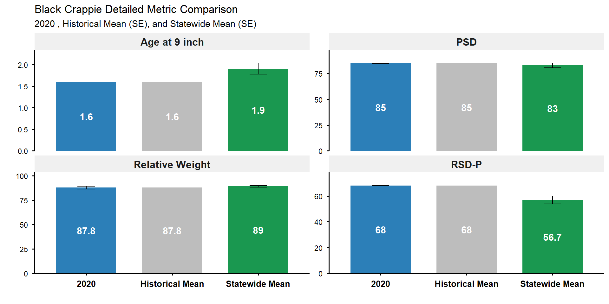
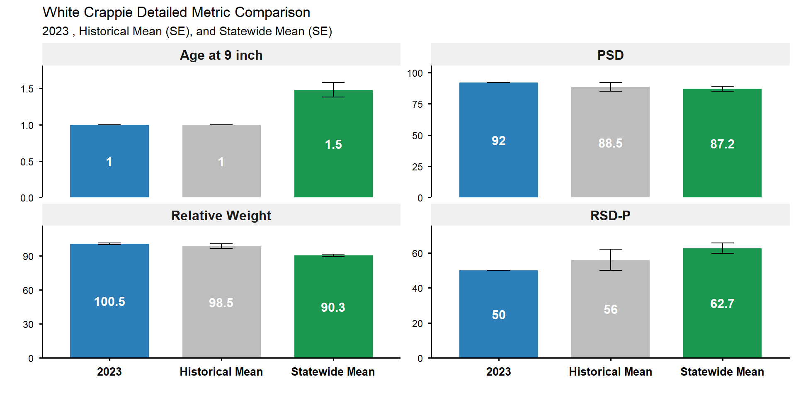
Bankhead Reservoir
Bankhead Dam impounds the three main forks of the Black Warrior River, creating a 9,200 acre reservoir with 172 miles of boatable tributaries and backwaters for anglers to explore. The lake supports a trophy striped bass fishery and abundant populations of largemouth bass, Alabama bass, crappie, sunfish, and catfish. Access to the reservoir is by private pay launches, however, ADCNR provides three boating access areas to the upper Mulberry Fork.
- Location: West Central Alabama, between Jasper and Tuscaloosa
- Size: 9,200 acres
- Max Depth: 74 feet
- Impounded: 1915
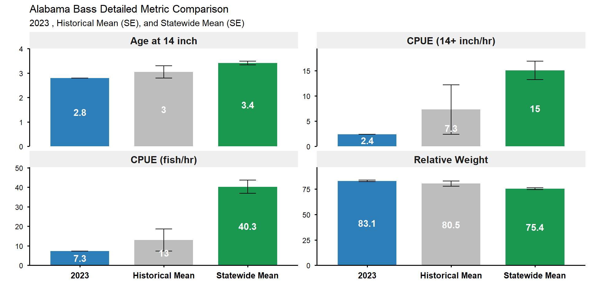
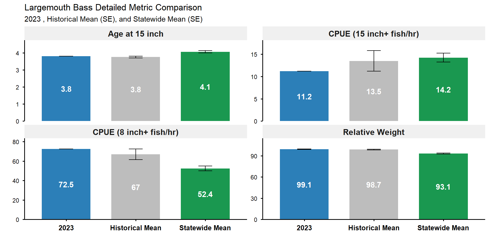
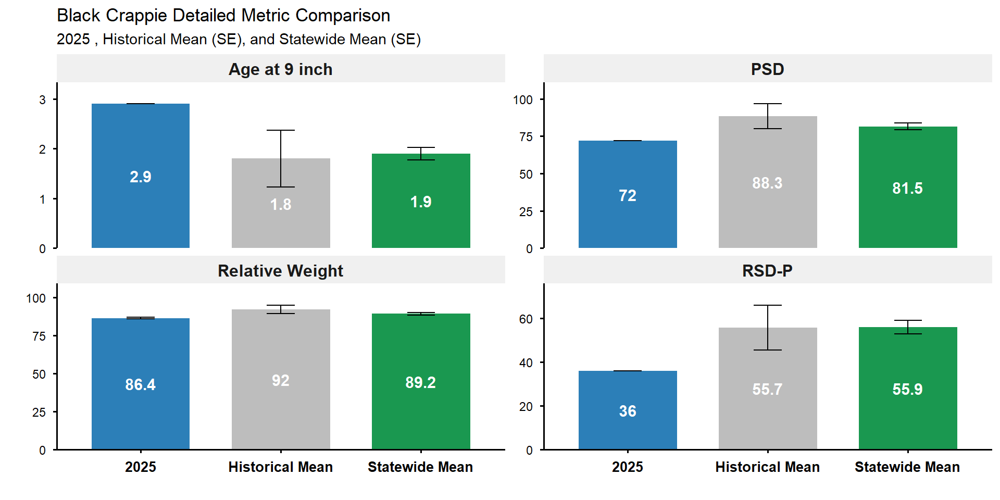
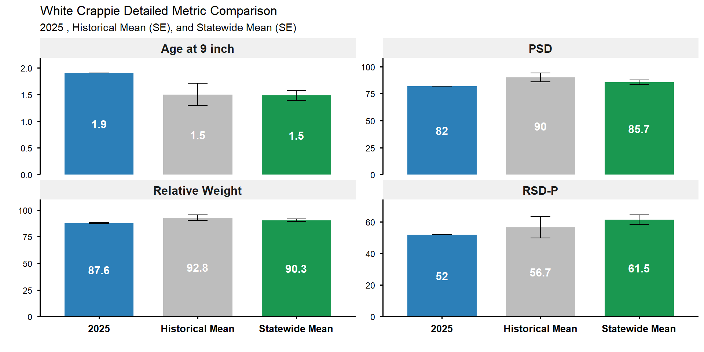
Bear Creek Reservoir
Bear Creek Reservoir (aka Big Bear) is one of four lakes constructed by the Tennessee Valley Authority (TVA) as part of the Bear Creek Waterway Control Project to control floodwater. A user’s permit is required for those between the ages of 16 and 65. The lake supports abundant gamefish such as largemouth bass, spotted bass, white crappie, and bream. Due to the Fish Consumption Advisory this reservoir excels as a “catch and release” destination for bass and crappie anglers.
- Location: Northwest Alabama, about 15 miles west-southwest of Russellville
- Size: 670 acres
- Max Depth: 74 feet
- Impounded: 1969


Cedar Creek Reservoir
Cedar Creek Reservoir is one of four lakes constructed by the Tennessee Valley Authority (TVA) as part of the Bear Creek Waterway Control Project to control floodwater. A user’s permit is required for those between the ages of 16 and 65. The lake supports abundant gamefish such as largemouth bass, spotted Bass, crappie, bream, and catfish. In addition to bream and crayfish, forage species such as threadfin shad and gizzard shad help sustain the gamefish populations.
- Location: Northwest Alabama about 12 miles west of Russellville
- Size: 4,200 acres
- Max Depth: 80 feet
- Impounded: 1979


Claiborne Reservoir
Claiborne Reservoir is a river-run reservoir with 5,930 surface acres of water which courses 60.5 miles through Wilcox, Clarke, and Monroe counties in southwest Alabama. It was the last impoundment constructed on the Alabama River by the U.S. Army Corps of Engineers in 1970. Claiborne provides excellent fishing for largemouth bass, crappie and catfish. It is operated and regulated by the U.S. Army Corps of Engineers for navigation; however, the lock does not operate on a fixed schedule, but the Corps can be contacted to schedule an appointment for lockage. Claiborne is rural and typically only the locals know what excellent fishing the reservoir provides.
- Location: Southwest Alabama; Wilcox, Clarke, and Monroe counties
- Size: 5,930 acres
- Max Depth: 40 feet
- Impounded: 1970
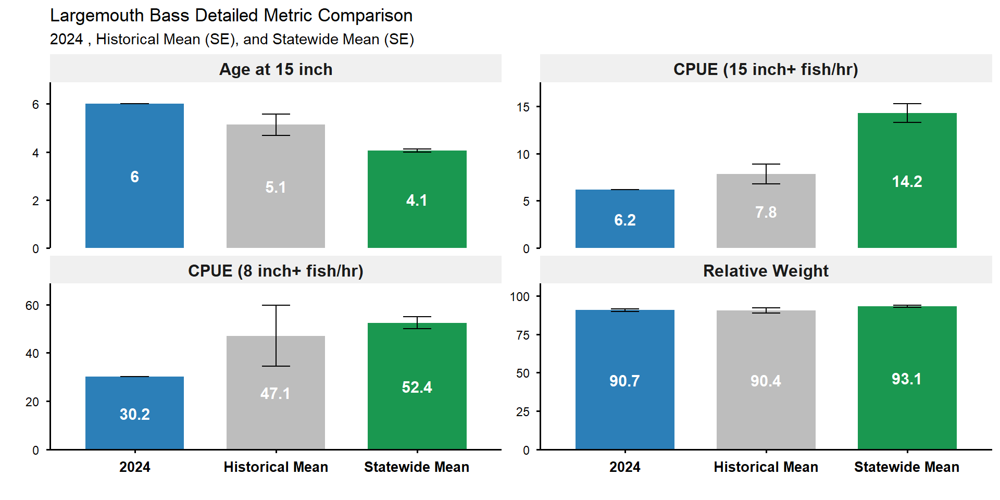
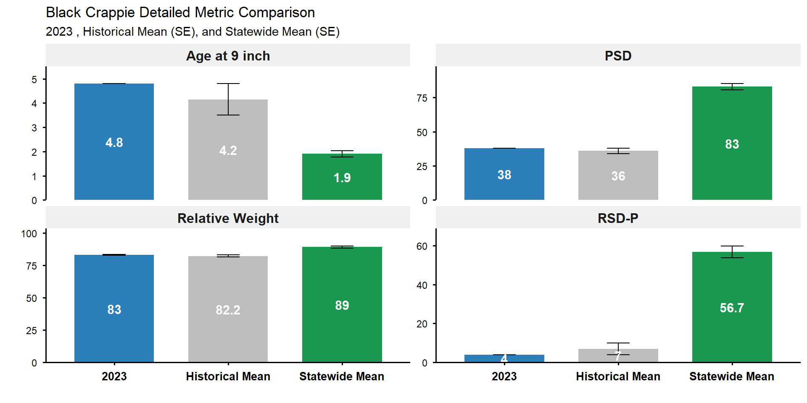
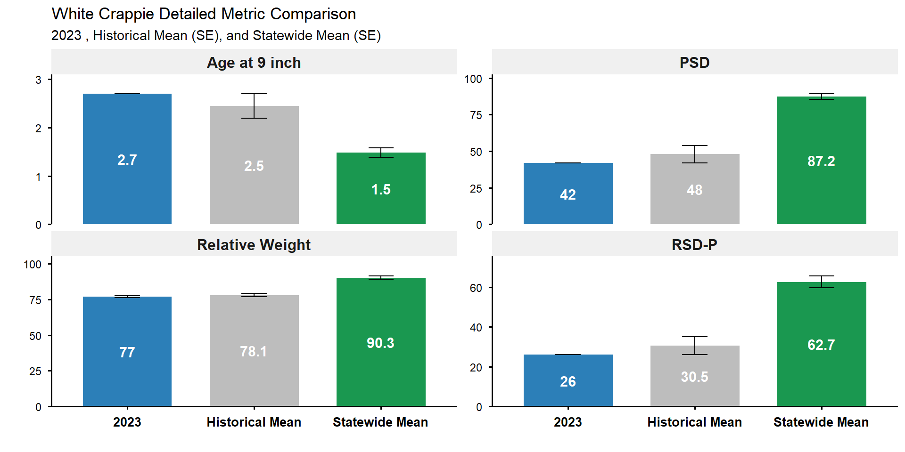
Coffeeville Reservoir
Coffeeville Reservoir, a run-of-the-river impoundment on the Tombigbee River in southwest Alabama, extends approximately 97 river miles from Coffeeville Lock and Dam upstream to Demopolis Lock and Dam. Operated by the U.S. Army Corps of Engineers, the reservoir functions primarily as a navigation corridor while maintaining riverine characteristics and seasonal flow variability. This system supports a diverse assemblage of aquatic habitats, including main-channel, backwater, and floodplain environments. As a result, Coffeeville Reservoir sustains productive fisheries for largemouth bass, crappie spp., bream, and catfish.
- Location: Southwest Alabama, between Coffeeville and Demopolis Lock and Dam
- Size: 8,500 acres
- Max Depth: 40 ft.
- Impounded: 1960, (Old Lock One dates back to 1915)
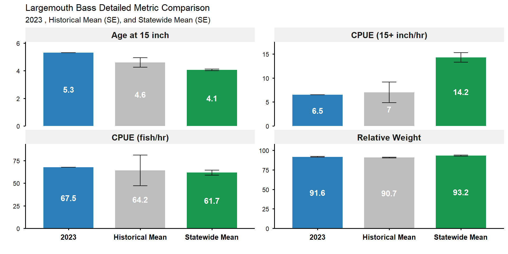
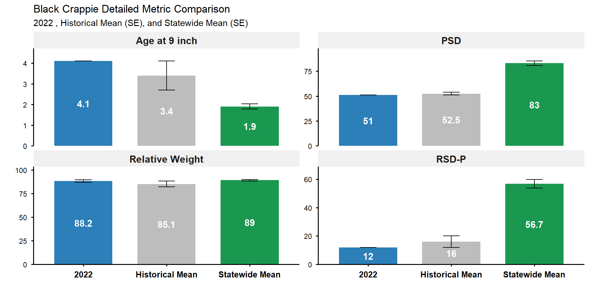
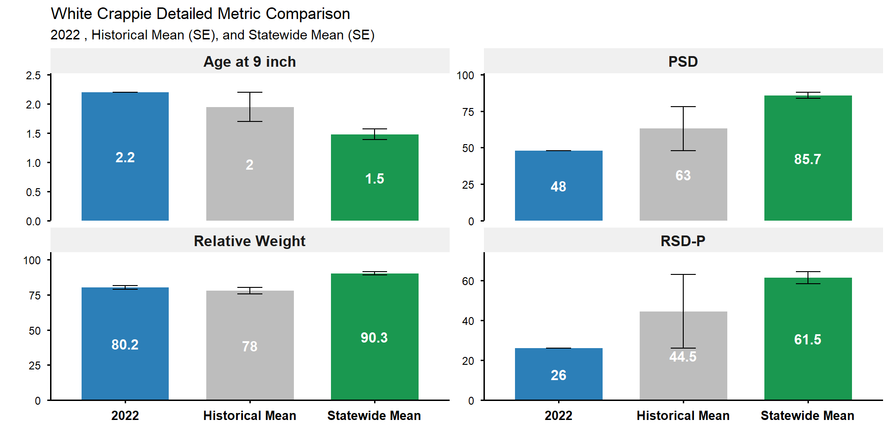
Lake Eufaula
Lake Eufaula is an impoundment on the Chattahoochee River in southeast Alabama and is one of the South’s premier bass fishing destinations. The U.S. Army Corps of Engineers oversees hydroelectric operations, navigation, flood control, and reservoir operations, including water-level control to preserve critical aquatic habitats and management of invasive plants. The minimally developed northern section of Lake Eufaula falls within the 11,160-acre Eufaula National Wildlife Refuge (NWR), headquartered on Highway 165 approximately 10 miles north of Eufaula. The lake supports abundant gamefish such as largemouth bass, black crappie, bream, and multiple catfish species.
- Location: Southeast Alabama, along the Georgia border near the town of Eufaula
- Size: 45,200 acres
- Max Depth: 93 feet
- Impounded: 1962
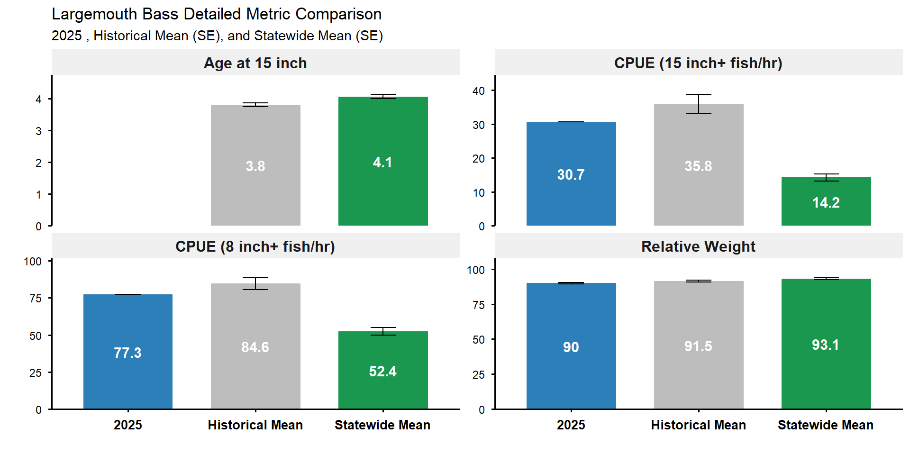
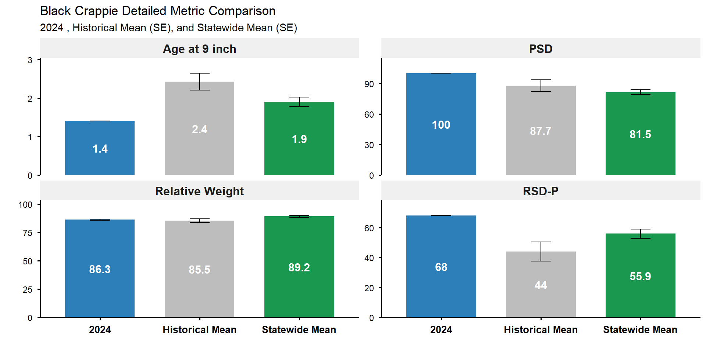
Gainesville Reservoir
Gainesville Reservoir is an impoundment of the Tombigbee River operated by the United States Army Corps of Engineers (USACE). Operations provide anglers boating access, bank fishing access, and invasive plant management. Boaters are required to purchase a day use pass for $5 or an annual pass for $40 from USACE to access the reservoir. The lake supports abundant populations of largemouth bass, crappie, and catfish.
- Location: West Alabama, 20 miles west of the city of Eutaw in Sumter County
- Size: 6,400 acres
- Max Depth: 51 feet
- Impounded: 1978
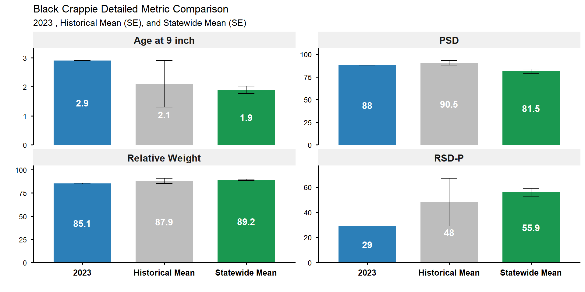
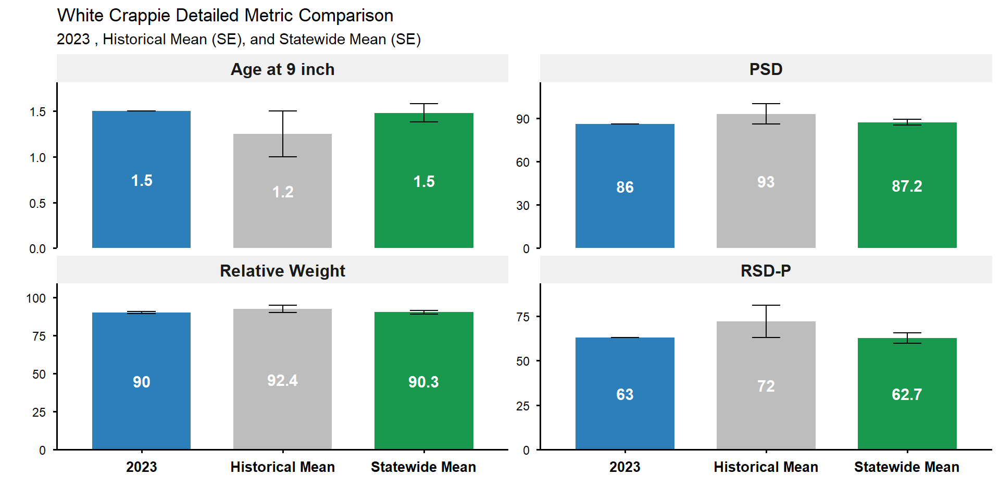
Gantt Lake
Gantt Lake is one of two reservoirs that impound the Conecuh River. It spans roughly 2,700 acres and 21 miles of shoreline and is well known for its Redear Sunfish (Shellcracker) fishery. Gantt Lake is operated by the PowerSouth Energy Cooperative, whose operations preserve critical aquatic habitats through water-level control. The lake is relatively infertile, but supports gamefish such as largemouth bass, crappie, bream and catfish.
- Location: South-central Alabama; North of Andalusia near the town of Gantt
- Size: 2,700 acres
- Max Depth: 40 feet
- Impounded: 1935
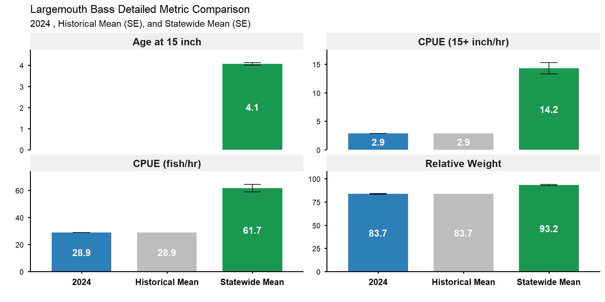
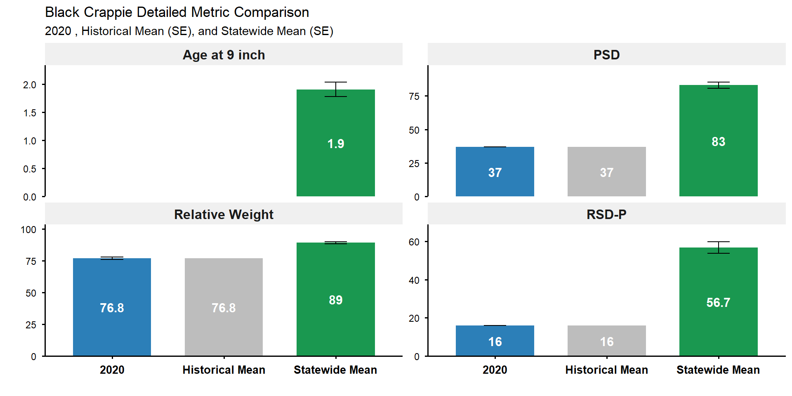
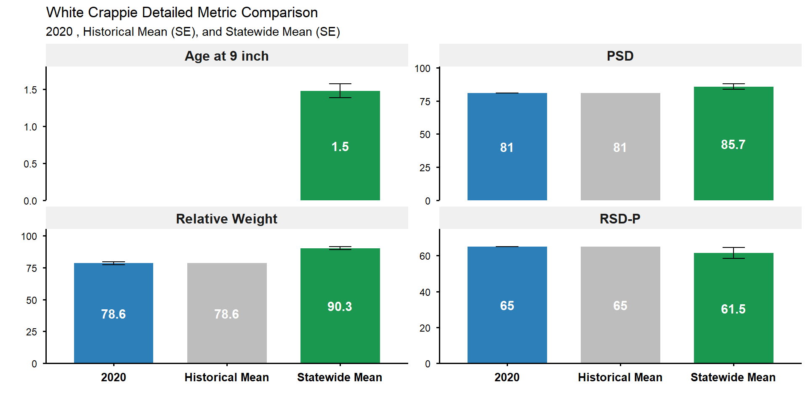
Lake Guntersville
Guntersville Reservoir is Alabama’s largest reservoir spanning roughly 69,100 acres and 75 miles and is renowned as one of the Country’s premier largemouth bass fisheries. Guntersville is operated by the Tennessee Valley Authority (TVA), whose operations preserve critical aquatic habitats through water-level control and invasive plant management. The lake supports abundant gamefish such as largemouth bass, spotted bass, smallmouth bass, both black and white crappie, bream (primarily bluegill and redear sunfish), sauger, white bass, striped bass, and trophy-sized catfish (channels, blues, and flatheads).
- Location: Northeast Alabama, from the City of Guntersville north past Bridgeport, AL to the Tennessee state line.
- Size: 69,100 acres
- Max Depth: 74 feet
- Impounded: 1939
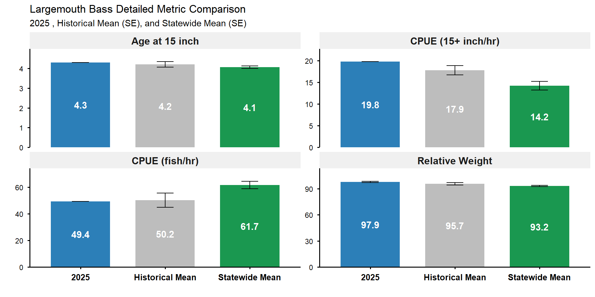
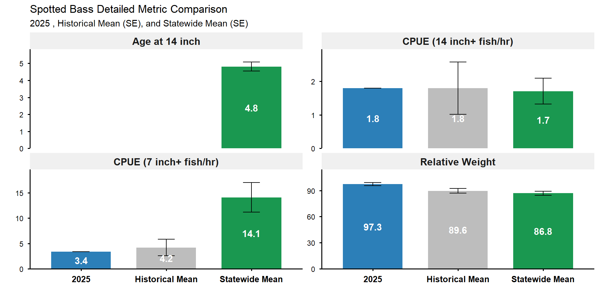
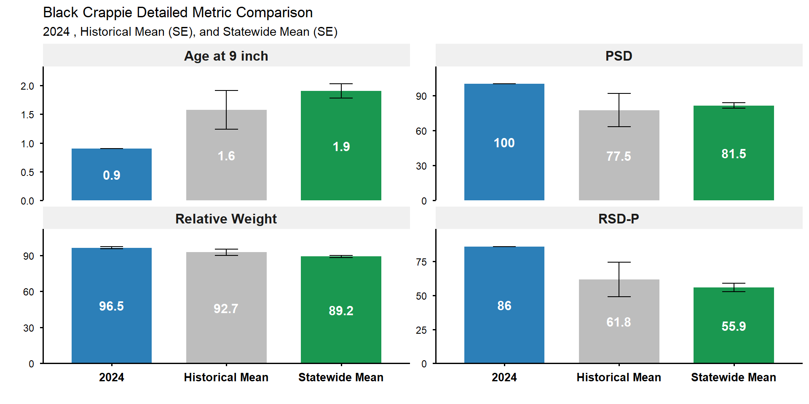
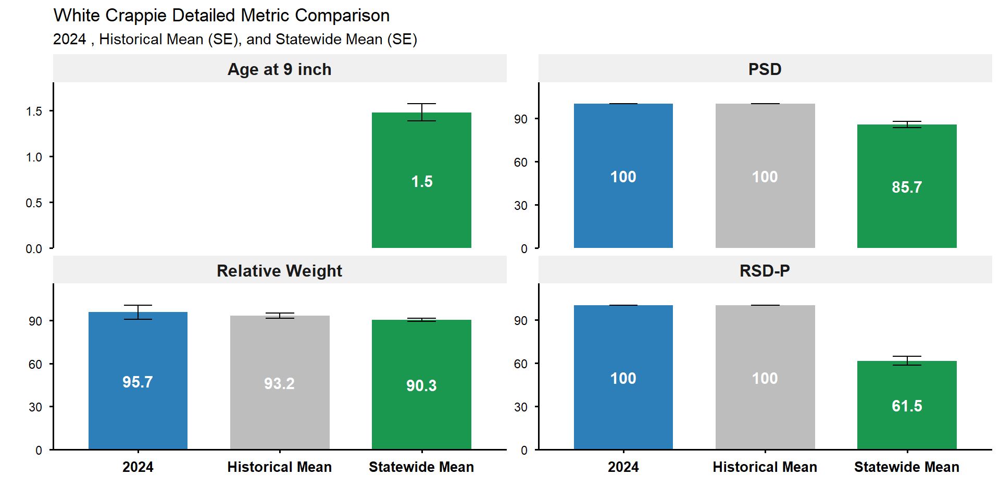
Harris Reservoir
Harris Reservoir (also known as Lake Wedowee) is a 10,660-acre impoundment of the Tallapoosa and Little Tallapoosa Rivers. Harris Dam was completed in 1983 and is the newest of Alabama Power’s 14 hydroelectric projects. It is operated by Alabama Power Company to provide flood control, supply hydroelectricity, and provide recreational activities such as boating, swimming and fishing. Although the watershed contains high agricultural use, the lake is relatively infertile and fish densities are relatively low. Anglers can still expect to catch largemouth bass, Alabama bass, bream, crappie, and catfish.
- Location: East Central Alabama, near Wedowee, Lineville, Roanoke
- Size: 10,660 acres
- Max Depth: 120 feet
- Impounded: 1983
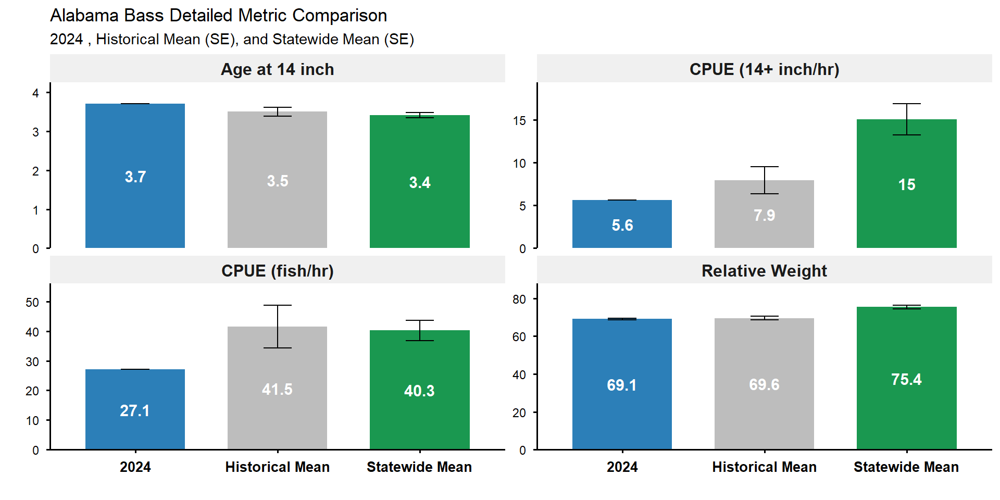
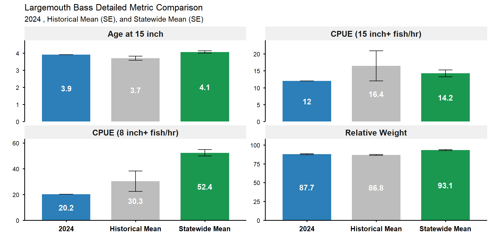
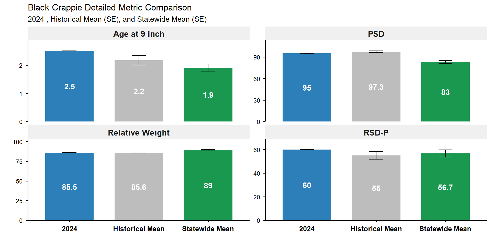
Holt Reservoir
Holt Reservoir is a main-stem impoundment of the Black Warrior River spanning 3,300 acres. The lake is renowned for trophy Alabama bass and produced the state record 120-pound blue catfish. The United States Army Corps of Engineers oversees navigation, flood control, and reservoir operations. Boaters are required to purchase a day use pass for $5 or an annual pass for $40 from USACE to access the reservoir. In addition to excellent fishing for Alabama bass and blue catfish, the lake also supports an abundance of other species such as largemouth bass, crappie, bream, channel catfish, flathead catfish, skipjack herring, and paddlefish.
- Location: West Alabama approximately 20 miles Northeast of Tuscaloosa.
- Size: 3,300 acres
- Max Depth: 85 feet
- Impounded: 1969
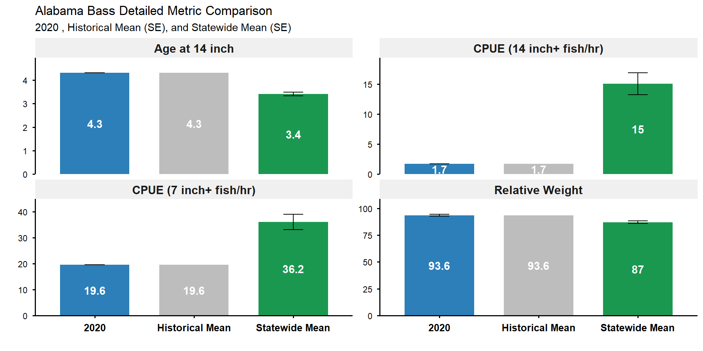
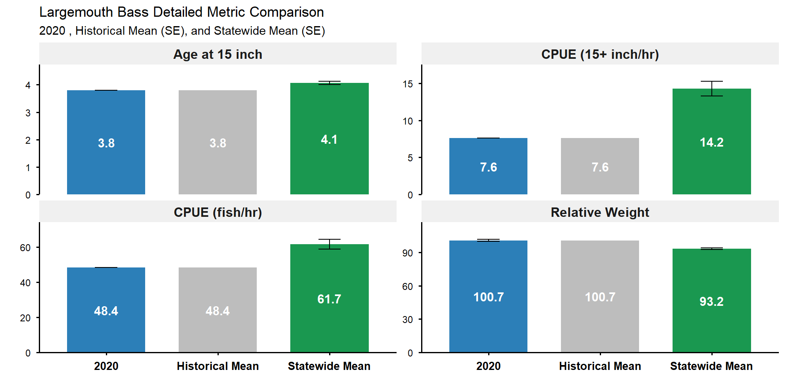
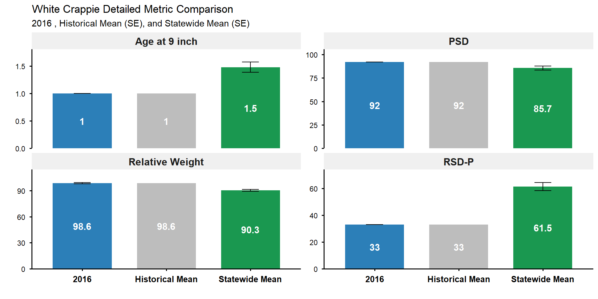
Inland Reservoir
Inland Lake is a tributary storage impoundment of the Blackburn Fork of the Black Warrior River. It is best known for its deep clear water and excellent fishing opportunities for Alabama bass, largemouth bass, striped bass, and crappie. Birmingham Water Works oversees flood control and reservoir operations. There are two boat ramps available for a $5.00 fee. During winter drawdown the ramp at the upper end of the lake is closed.
- Location: North Central Alabama, 30 miles Northeast of Birmingham
- Size: 1,560 acres
- Max Depth: 171 feet
- Impounded: 1939
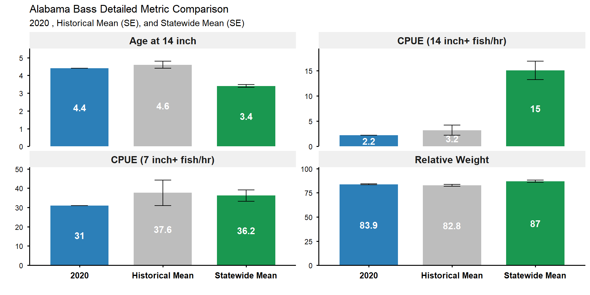
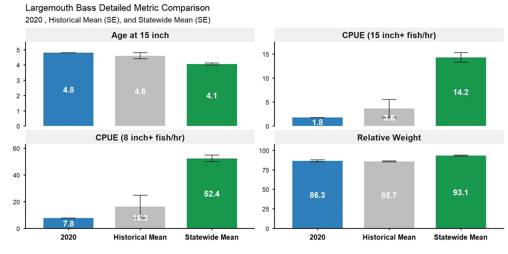
Lake Jordan
Jordan Reservoir is an impoundment on the Coosa River containing about 188 miles of shoreline. Alabama Power oversees hydroelectric operations, navigation, flood control, and reservoir operations. Jordan is very fertile and supports high densities of sport fish and forage species. The Mitchell Dam tailwater area at the upper end of the lake offers ample bank fishing access. Current from the hydroelectric turbine operation provides habitat for Alabama Bass and Hybrid Striped Bass, and catfish are also targeted by anglers in the tailwaters during summer months. The Bouldin area, or “New Lake” as it is locally coined, primarily contains shorelines filled with aquatic vegetation such as water willow, which is preferred by largemouth bass. Crappie grow very fast in Jordan, primarily due to the large population of threadfin in the reservoir. The adult population can vary in abundance due to the cyclic nature of crappies, but their fast growth keeps plenty of catchable size fish available to anglers.
- Location: Central Alabama – near Montgomery, Wetumpka, Deatsville, and Holtville.
- Size: 6,800 acres
- Max Depth: 110 feet
- Impounded: 1928
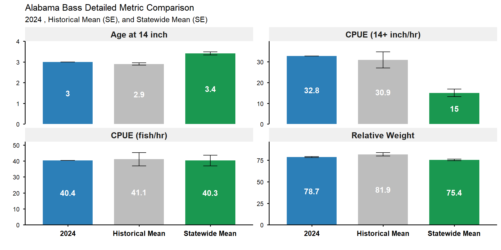
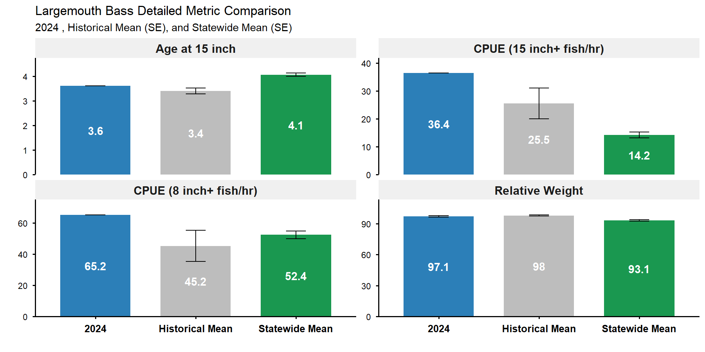
Lay Lake
Lay Dam was constructed in 1914, and is the first hydropower facility constructed by Alabama Power on the Coosa River system. Alabama Power oversees hydroelectric operations, navigation, flood control, and reservoir operations. Lay Reservoir offers unique angling opportunities for fisherman. The Alabama Bass can be caught from one end of the reservoir to the other, and largemouth bass are primarily targeted around the abundant aquatic vegetation found in Lay reservoir. Striped bass stockings create bank or boat angling opportunities in the Logan Martin tailrace during early spring. Lay also has abundant populations of crappie, catfish species, and bream.
- Location: Central Alabama – near Clanton, Shelby, Columbiana, Vincent, Childersburg Ohatchee
- Size: 12,000 acres
- Max Depth: 88 feet
- Impounded: 1914
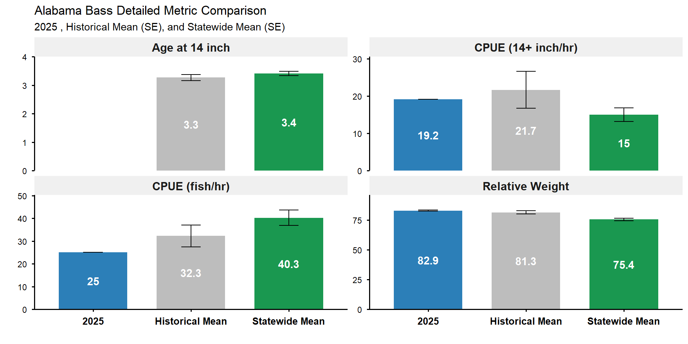
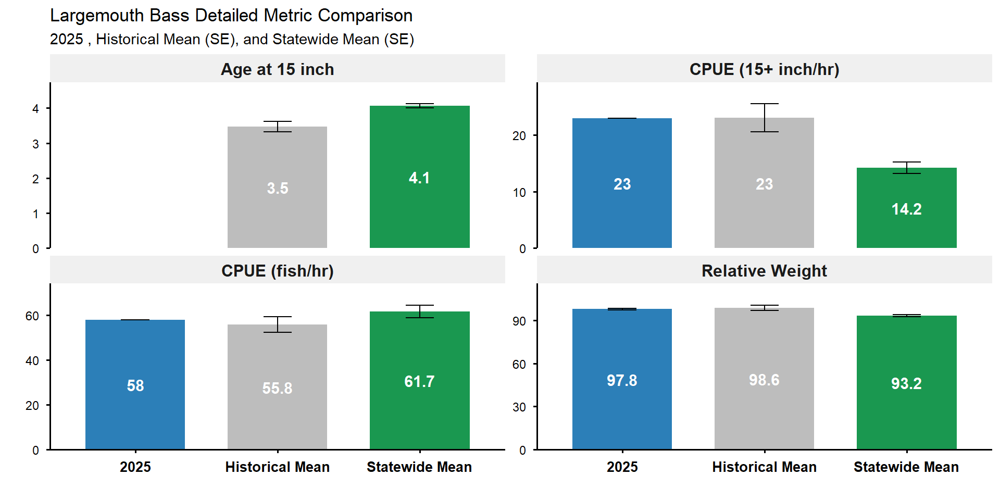
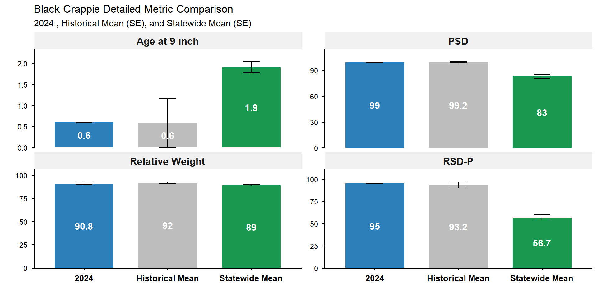
Little Bear Creek Reservoir
Little Bear Creek Reservoir is one of four lakes constructed by the Tennessee Valley Authority (TVA) as part of the Bear Creek Waterway Control Project to control floodwater. The surrounding land is managed by the Bear Creek Development Authority (BCDA). A user’s permit is required for those between the ages of 16 and 65. The lake supports abundant gamefish such as largemouth bass, spotted bass, crappie, bream, and catfish. Forage species such as threadfin shad and gizzard shad help sustain the “sport” fisheries.
- Location: Northwest Alabama about 13 miles west of Russellville
- Size: 1,560 acres
- Max Depth: 84 feet
- Impounded: 1976


Logan Martin Lake
Logan Martin Reservoir offers many opportunities for anglers, as recent boating access and lodging developments by municipalities have made Logan Martin a tournament fishing destination. Alabama Power oversees hydroelectric operations, navigation, flood control, and reservoir operations. Striped Bass congregate below Neely Henry dam in the early spring and are a popular target among anglers. The lake also supports abundant populations of crappie, largemouth bass, Alabama bass, catfish species, and bluegill.
- Location: Central/Northeast Alabama – near Lincoln, Pell City, Riverside, and Ohatchee
- Size: 15,263 acres
- Max Depth: 80 feet
- Impounded: 1964


Mobile-Tensaw River Delta
The Mobile–Tensaw River Delta, one of the largest and most ecologically diverse river deltas in the United States, encompasses more than 250,000 acres of rivers, swamps, marshes, and floodplain forests in coastal Alabama. Formed by the confluence of the Mobile, Tensaw, and Apalachee rivers, the delta is renowned as a premier freshwater fishing and wildlife system in the Southeast. Managed cooperatively by state and federal partners, with hydrology driven by natural river flows and upstream water control projects, the delta supports extensive aquatic habitat and productivity. These diverse environments sustain abundant fisheries, including largemouth bass, crappie spp., bream, striped bass, catfish, and a wide array of estuarine and migratory species.
- Location: Southwest Alabama, north of Mobile Bay
- Size: 20,323 acres
- Max Depth: 100 feet
- Impounded: Free flowing from Claibourne and Coffeeville dams


Millers Ferry
The official name of this impoundment is William (Bill) Dannelly Reservoir, but it is better known locally as Millers Ferry. Impounded by the U.S. Army Corps of Engineers in 1969, Millers Ferry spans 17,200 acres and is roughly 103 miles from the Millers Ferry Dam to the Robert F. Henry Dam upstream. Millers Ferry provides excellent fishing for largemouth bass, crappie and catfish. It is operated and regulated by the U.S. Army Corps of Engineers for navigation and power generation. The lock does not operate on a fixed schedule, but the Corps can be contacted to schedule an appointment for lockage. Millers Ferry is rural and typically only the locals know what excellent fishing the reservoir provides.
- Location: Southwest Alabama, between Camden and Selma
- Size: 17,200 acres
- Max Depth: 60 feet
- Impounded: 1969


Lake Mitchell
Mitchell Reservoir is the smallest impoundment on the Coosa River and the second completed by Alabama Power on the Coosa River system. Mitchell Reservoir offers stunning scenery due to its largely undeveloped shoreline, and natural islands located in the headwaters below Lay Dam. Alabama Power oversees hydroelectric operations, navigation, flood control, and reservoir operations. Largemouth bass and Alabama bass are abundant, and hybrid striped bass stockings create bank and boat fishing opportunities. The lake also supports populations of crappie, catfish species, and bream.
- Location: Central Alabama – near Clanton, Shelby, Columbiana, Vincent, Childersburg Ohatchee
- Size: 5,850 acres
- Max Depth: 75 feet
- Impounded: 1923
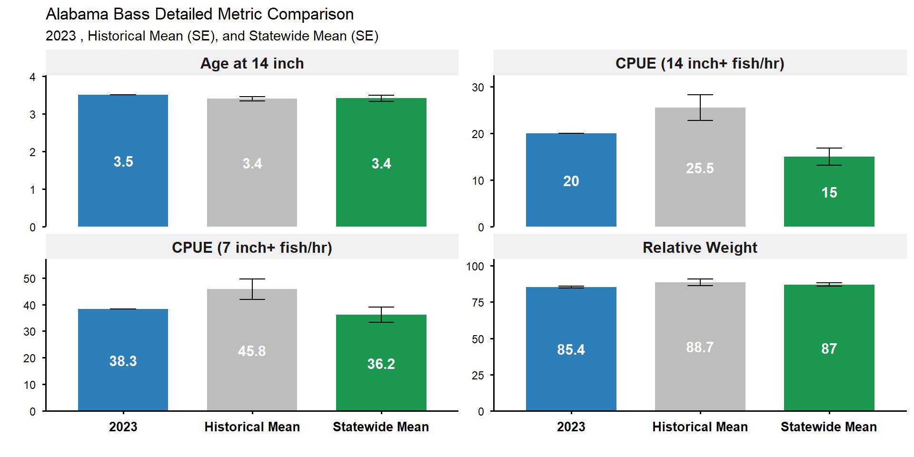
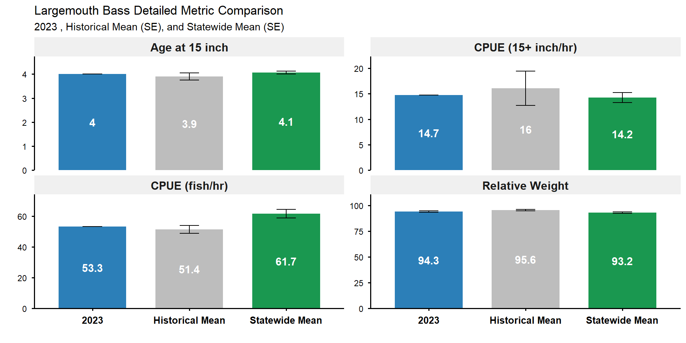
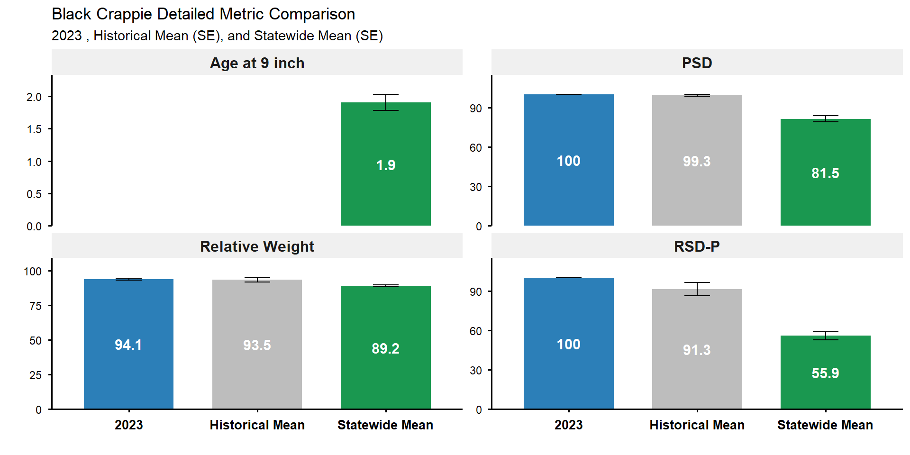
Neely Henry Reservoir
Neely Henry Reservoir offers excellent sportfish angling opportunities. Crappie fishing at Neely Henry goes under the radar but can be fantastic in the spring. The lake supports healthy populations of Largemouth Bass and Alabama Bass. Although once known as the best kept secret in bass fishing, it now hosts numerous bass tournaments. Catfish anglers can expect to catch plenty of blue catfish and channel catfish of eatable size, with an occasional trophy sized catfish mixed in. Bream fishing at Neely Henry, particularly in summer when insects such as mayflies are hatching, can be very good and provides a great way to introduce kids to fishing. Alabama Power oversees hydroelectric operations, navigation, flood control, and reservoir operations.
- Location: Northeast Alabama – near Gadsden and Ohatchee
- Size: 11,200 acres
- Max Depth: 60 feet
- Impounded: 1966


Pickwick Reservoir
Pickwick Reservoir (aka Pickwick Lake) is in the extreme northwest corner of Alabama extending westward from Florence to Pickwick Dam in Tennessee. Renowned as one of the Country’s premier smallmouth Bass fisheries. Managed by the Tennessee Valley Authority (TVA) which oversees hydroelectric operations, navigation, flood control, and reservoir operations. The lake supports abundant gamefish such as largemouth Bass, smallmouth bass, crappie, bream, sauger, white bass, striped bass, and catfish. Abundant forage species such as threadfin and gizzard Shad are what sustains the “sport” fishes.
- Location: Extreme Northwest Alabama, from Florence west to Pickwick Dam
- Size: 43,100 acres
- Max Depth: 59 feet
- Impounded: 1938
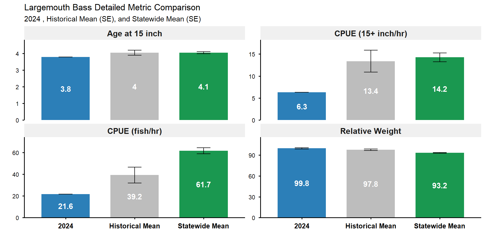
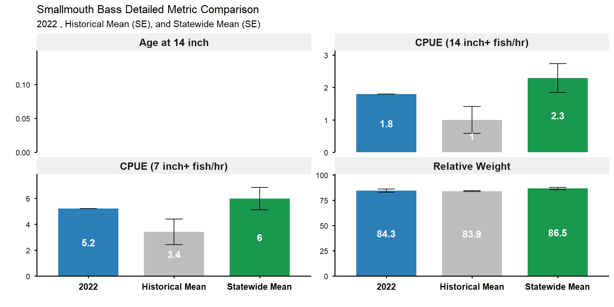
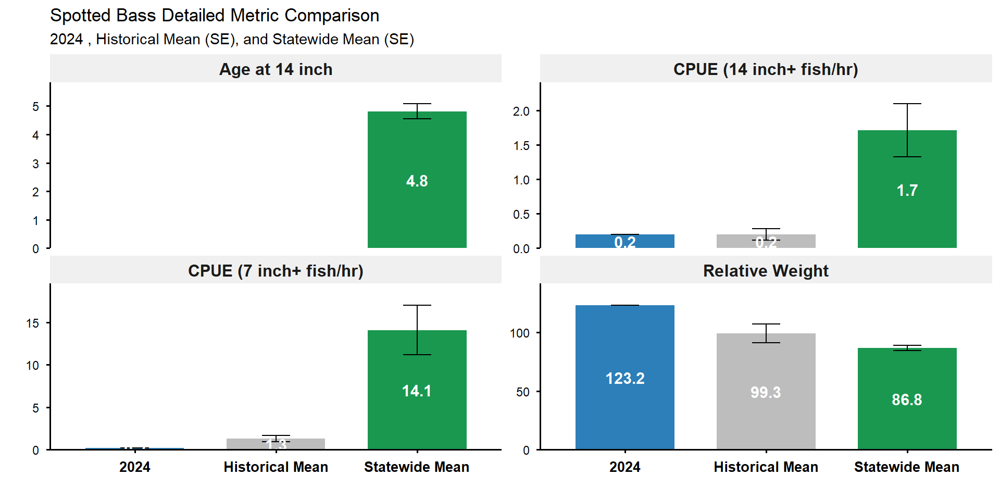
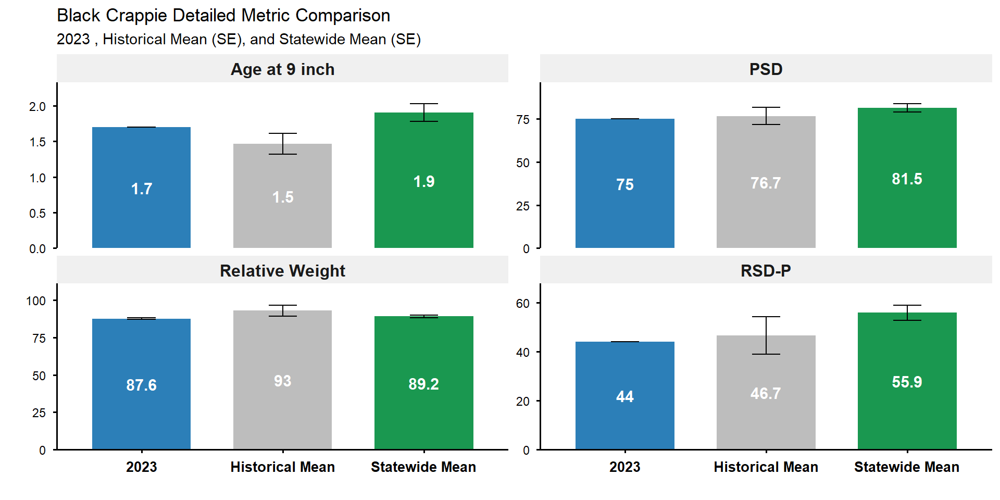
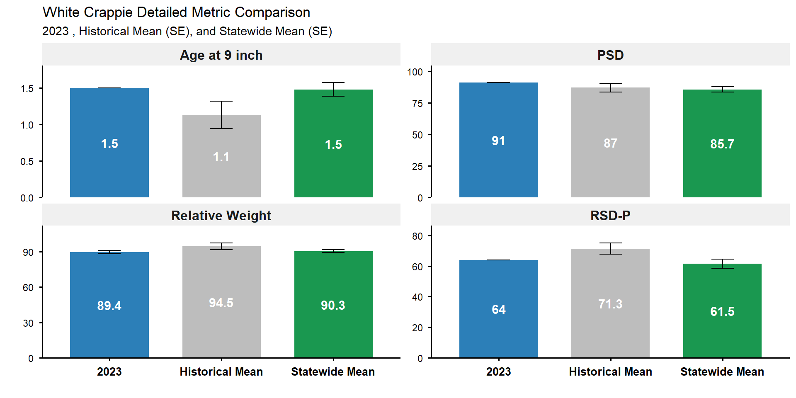
Point A Reservoir
Point A Lake is one of two reservoirs that impound the Conecuh River and spans roughly 600 acres with 19 miles of shoreline. It is relatively infertile but well known for its Redear Sunfish (shellcracker) fishery. The lake also supports gamefish such as largemouth bass, black and white Crappies, bream, and catfish. PowerSouth Energy Cooperative oversees hydroelectric operations, navigation, flood control, and reservoir operations. These operations preserve critical aquatic habitats through water-level control.
- Location: South, central Alabama; North of Andalusia
- Size: 600 acres
- Max Depth: 35 feet
- Impounded: 1926


Smith Lake
Lewis Smith Lake is a tributary storage impoundment of the Sipsey Fork of the Black Warrior River. It is an expansive reservoir with over 500 miles of shoreline. Alabama Power Company oversees flood control and reservoir operations. It is best known for its deep clear water and excellent fishing opportunities for striped bass, Alabama bass, striped bass, crappie, and bluegill sunfish.
- Location: North Central Alabama, West of Cullman and North of Jasper
- Size: 21,200 acres
- Max Depth: 264 feet
- Impounded: 1961
Lake Tuscaloosa
Lake Tuscaloosa is an impoundment of North River and is a water supply reservoir for Tuscaloosa residents. The City of Tuscaloosa Water Department oversees flood control and reservoir operations. The lake was cleared of organic matter to maximize efficiency of water treatment operations. Although this practice reduced the fertility of the reservoir, Lake Tuscaloosa still provides fishing opportunities for crappie, largemouth bass, and bluegill.
- Location: North of Tuscaloosa in west central Alabama.
- Size: 5,885 acres
- Max Depth: 92 feet
- Impounded: 1973
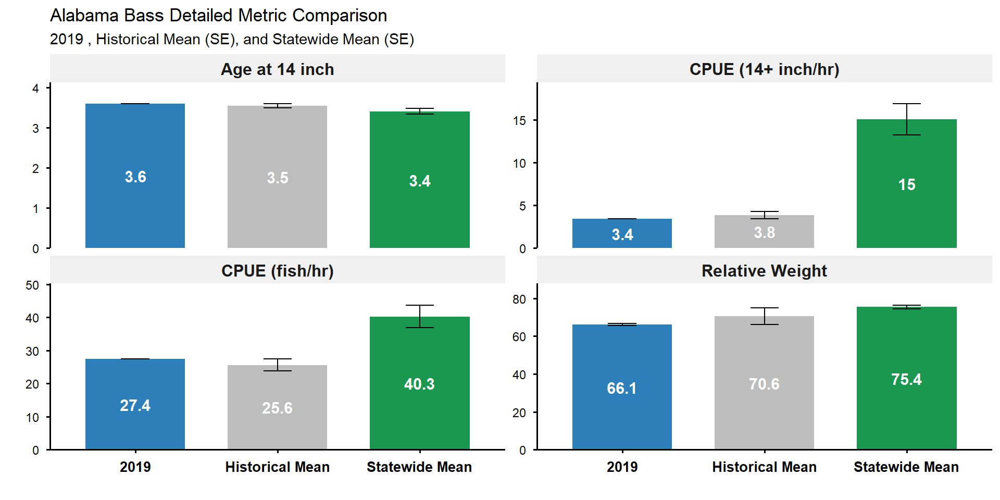
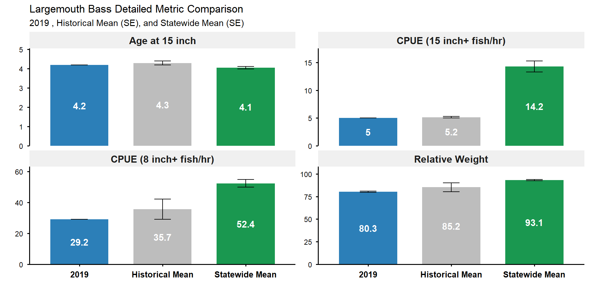
Upper Bear Creek Reservoir
Upper Bear Creek Reservoir is one of four lakes constructed by the Tennessee Valley Authority (TVA) as part of the Bear Creek Waterway Control Project to control floodwater. The surrounding land is managed by the Bear Creek Development Authority (BCDA). A user’s permit is required for those between the ages of 16 and 65. Well known as a trophy largemouth bass fishery, the lake supports other sportfishes such as spotted bass, crappie, bream, and catfish.
- Location: Northwest Alabama, 15 miles south of Russellville
- Size: 1,850 acres
- Max Depth: 70 feet
- Impounded: 1978


Warrior Reservoir
Warrior Reservoir is a mainstem impoundment of the Black Warrior River with limited backwater habitat. The United States Army Corps of Engineers (USACE) oversees navigation, flood control, and reservoir operations. Boaters are required to purchase a day use pass for $5 or an annual pass for $40 from USACE to access the reservoir from most boat ramps. The lake supports abundant gamefish populations such as Largemouth Bass, crappie, bream, and catfish.
- Location: Southwest Alabama; 40 miles South of Tuscaloosa.
- Size: 8,600 acres
- Max Depth: 50 feet
- Impounded: 1948
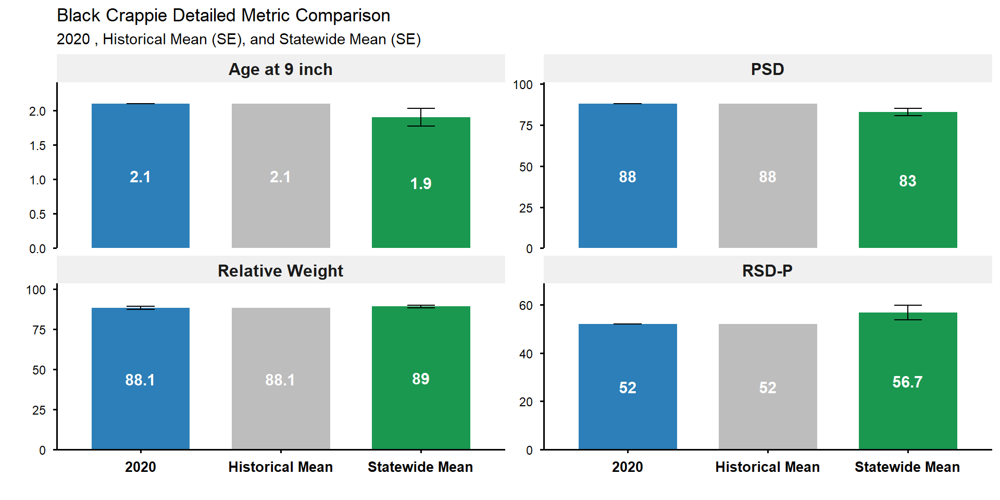
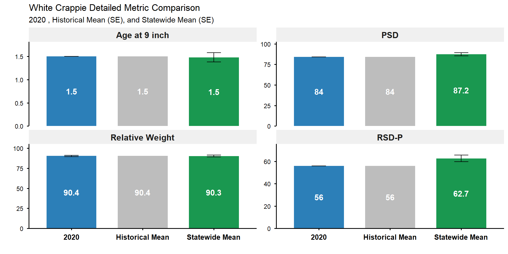
Weiss Lake
Weiss Reservoir (pronounced Wice) is known as the “Crappie Fishing Capital of the World”, and the fishery attracts numerous non-resident anglers each year. The lake also supports healthy bass fisheries for largemouth bass and Alabama bass. Historically, Weiss has ranked as one of the top bass lakes in the state of Alabama. More recently, catfish (blue catfish, channel catfish, and lathead catfish) have been a popular target among anglers and can reach trophy size. Bream fishing at Weiss Lake can be great in the summertime, particularly when insects such as mayflies are hatching. Alabama Power oversees hydroelectric operations, navigation, flood control, and reservoir operations.
- Location: Northeast Alabama – near Leesburg, Cedar Bluff, Centre and Gaylesville
- Size: 30,027 acres
- Max Depth: 62 feet
- Impounded: 1961
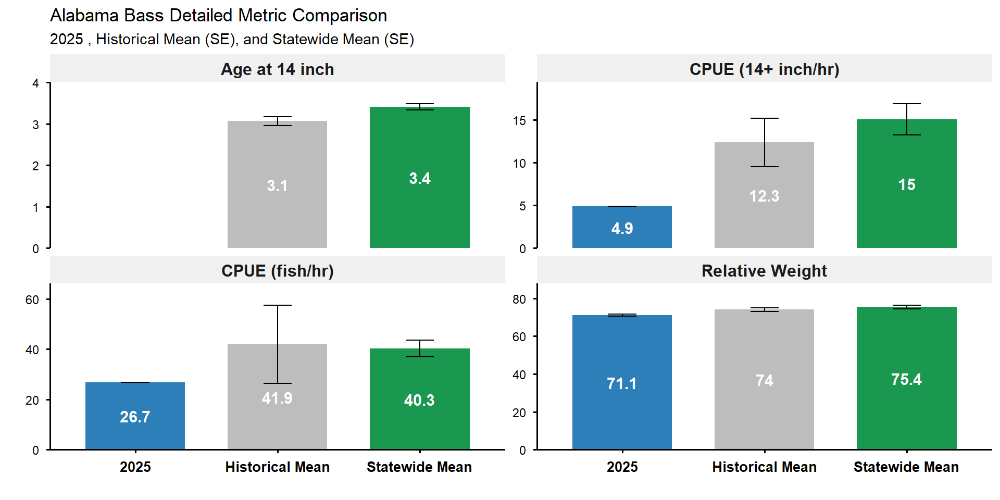
Wheeler Reservoir
Wheeler Reservoir (aka Wheeler Lake) is Alabama’s 2nd largest reservoir and encompasses roughly 67,070 acres and 1,027 miles of shoreline. It is known for the bass fishing area called the “Decatur Flats”, a large backwater area on the northside of the river channel with aquatic vegetation, stump rows, and several creek channels. This area is located from the railroad tracks at Decatur downstream (west) to Browns Ferry Nuclear Plant. Tennessee Valley Authority (TVA) oversees hydroelectric operations, navigation, flood control, and reservoir operations. These operations preserve critical aquatic habitats through water-level control. The lake supports abundant gamefish such as largemouth bass, spotted bass, smallmouth bass, crappie, bream, sauger, white bass, striped bass, and trophy-sized blue catfish.
- Location: Northcentral Alabama, from Rogersville east past Huntsville.
- Size: 67,070 acres; 74 miles long.
- Max Depth: 57 feet
- Impounded: 1936
Wilson Reservoir
Wilson Reservoir (aka Wilson Lake) extends upstream for 15 miles to Wheeler Dam and covers 15,500 acres. The lake is deep with steep rocky banks. Tennessee Valley Authority (TVA) oversees hydroelectric operations, navigation, flood control, and reservoir operations. These operations preserve critical aquatic habitats through water-level control. The lake supports abundant gamefish such as largemouth and smallmouth bass, bream, sauger, white bass, striped bass, and trophy-sized Blue and flathead catfish.
- Location: Northwest Alabama, from Florence east to Wheeler Dam
- Size: 15,500 acres; 166 miles of shoreline
- Max Depth: 91 feet Impounded: 1924